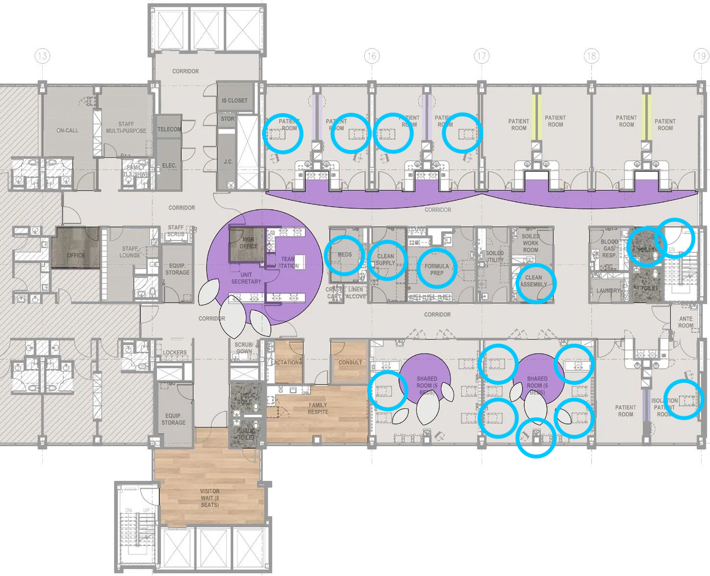

SESSION 3 - Introduction to Trimming, Assembly and QC
Module Leads: Julio Diaz Caballero, Natacha Couto, Georgina Lewis-Woodhouse, Emmanuelle Kumaran, Nabil Fareed-Alikhan, Sophia David, Monica Abrudan
based on the exercise developed by Silvia Argimon
Table of contents
Introduction
Note: This exercise is a work of fiction. Any resemblance to a real life situation is purely coincidental.
In December 2020, three cases of primary bloodstream infections sustained by ertapenem-resistant Klebsiella pneumoniae were observed over a two-week period in the neonatal intensive care unit (NICU) at the University College Hospital in Ibadan, Oyo State. This NICU consists of a 15-bed tertiary level ward. Since the detection of these infections, faecal screening of all admitted neonates was performed. Additionally, ten samples from the environment were collected. The epidemiological and demographic data is summarised in the file epi_data.csv.

Plan of the NICU. Locations of sample collection is indicated with light blue circles.
The reference lab sent you the culture results from the faecal, bloodstream, and environmental sampling in an Excel file called (lab_results.xlsx). Faecal screening of the admitted neonates, revealed that five other neonates were carriers of K. pneumoniae. Also, the lab reported that 2 out of 10 environmental samples were positive for K. pneumoniae. This immediately prompted the closure of 1 room.
One colony from each confirmed case and from each of the two positive environmental samples were sent to the GHRU-Ibadan unit for sequencing.
It is now up to you to investigate the possibility of an outbreak of K. pneumoniae in the neonatal unit using the raw sequencing data, the GHRU assembly pipeline, Pathogenwatch, data-flo and Microreact, free web applications developed by the Centre for Genomic Pathogen Surveillance for data analyses, integration and visualisation.
Objectives
At the end of this session the participants will be able to:
- Trim, assemble and QC with GHRU Nextflow pipeline
- Obtain high quality assemblies for downstream analysis
- Identify and discard low quality genomes
- Determine the probable cause of issues during sequencing and assembly
Trim, assemble and QC with GHRU Nextflow pipeline
GHRU Nextflow pipeline can be used to process short read fastq files an assembly pipeline using the SPAdes assembler. Alongside this it will QC the reads before and after trimming and QC the final assembled scaffolds file using Quast. The pipeline was based on Shovill (Thanks to Torsten Seemann @torstenseemann): https://github.com/tseemann/shovill
This pipeline automates a number of key steps in the complex process of genome assembly.
Hardware
For this exercise you will use our pre configured bioinformatics servers. Connecting to our bioinformatics servers ensure the computational resources required for the assembly process are available. If you wish to run through this module on another platform, you will need to install the required software and download the sample data yourself. The pipeline we will be using is available here https://gitlab.com/cgps/ghru/pipelines/dsl2/pipelines/assembly.
To connect to our bioinformatics servers, follow the instructions below. Replace user with your username with the name of the server you want to connect to. You will need to enter your password when prompted. Your password will be provided to you by one of the instructors:
# Connect to the server
ssh user@159.65.95.44Data
You will find 11 sets of paired-end Illumina reads in the /data/. Thus, this directory will contain 22 fastq files (two per genome). You can check the data is actually there:
# Check the contents of the /data/ directory
ls /data/The /data directory will serve as the input directory for the GHRU assembly pipeline. You can practice fetching the data from a remote location such as Figshare, ENA or SRA following the instructions in the fetching data bonus section.
Software
The assembly process pipeline will process each pair of Illumina short-read fastq files and assemble them using the SPAdes assembler. Along the assembly process, the workflow will perform quality control checks and filters. The workflow consists of the following steps:
- QC reads using FastQC before trimming
- Trim reads using Trimmomatic and Cutadapt (if
--cutadaptspecified) - QC reads using FastQC after trimming
- Correct reads using lighter
- Check for contamination using confindr
- Count number of reads and estimate genome size using Mash
- Downsample reads if the
--depth_cutoffargument was specified - Merge reads using Flash where the insert size is small
- Assemble reads using SPAdes (by default the
--carefuloption is turned off) - Assess species identification using bactinspector
- Assess assembly quality using QUAST
- Summarise all assembly QCs using QUAST
- (Optional if QuailFyr qc conditions YAML file is supplied). Filter assemblies into three directories: pass, warning and failure based on QC metrics

A sumamry of this process is shown above
Nextflow is already installed in our bioinformatics servers, and the assembly pipeline can be found in /opt/ghru-assembly. Let’s check that nextflow is installed and that we can find the assembly pipeline:
# Check that nextflow is installed
nextflow -v
# Check the assembly pipeline can be found at /opt/ghru-assembly directory
ls /opt/ghru-assemblyNextflow should be preconfigured for you, but if you want to try this on another platform you will need too install nextflow and assembly pipeline. You can install them by following the instructions in the install nextflow or install pipeline bonus sections.
Implementation
First we need to create a directory to store the assemblies. We will call this directory results. You can create this directory with the following command, replace user with your username:
# Create the results directory
mkdir /workshop/user/resultsNext, let’s create a directory to store the implementation scripts and the working directory. We will call this directory scripts. You can create this directory with the following command, replace user with your username:
# Create the scripts directory
mkdir /workshop/user/scriptsNow we create a script to run the assembly pipeline. You can create a file called assembly.sh in the scripts directory using a text editor such as nano or vim. You can copy and paste the following code into the file and save it:
Please change the output directory in line with your username.
#!/bin/bash
NEXTFLOW_WORKFLOWS_DIR='/opt/ghru-assembly'
INPUT_DIR='/data'
OUTPUT_DIR='/workshop/user/results'
nextflow run ${NEXTFLOW_WORKFLOWS_DIR}/main.nf \
--adapter_file adapters.fas \
--qc_conditions qc_conditions_nextera_relaxed.yml \
--input_dir ${INPUT_DIR} \
--fastq_pattern '*{R,_}{1,2}.f*q.gz' \
--output_dir ${OUTPUT_DIR} \
--depth_cutoff 100 \
--prescreen_file_size_check 12 \
--careful \
--kmer_min_copy 3 \
-w ${OUTPUT_DIR}/work \
-resumeFinally, you can run the assembly pipeline by executing the script, replace user with your username:
# Run the assembly pipeline
bash /workshop/user/scripts/assembly.shResults
The assembly pipeline will create six directories in the assemblies directory, replace user with your username.
# Check the contents of the /results directory
ls /workshop/user/resultsYou will find the fasta-formatted assemblies in the assemblies directory. There, you will find pass, warning, and failure directories containing the assemblies according to their quality. You can check the contents of the assemblies directory, replace user with your username:
# Check the contents of the /results/assemblies directory
ls /workshop/user/resultsAdditonally you will find the quality_reports directory containing the quality control reports for the assemblies. You can check the contents of the quality_reports directory, replace user with your username:
# Check the contents of the /results/quality_reports directory
ls /workshop/user/results/quality_reportsYou may want to import the quality report (results/quality_reports/qualifyr_report.tsv) to your local machine so as to explore whether the assemblies are of high quality or not. You can use the scp command to do this, replace user with your username:
# Copy the quality report to your local machine
scp user@159.65.95.44:/workshop/user/results/quality_reports/qualifyr_report.tsv /path/to/local/machineYou will be prompted for your password. You can use the same command to copy the assemblies to your local machine (hint: scp -r helps you move an entire directory).
Other workflow outputs
There is a great deal of other outputs produced by the pipeline. These will be found in the directory specified by the --output_dir argument. In this case, /workshop/user/results/
- A directory called fastqc/post_trimming that contans the Fastqc reports for each fastq in html format after trimming
- A directory called assemblies containing the final assembled scaffold files named as
_scaffolds.fasta. If the qc_conditions argument was given there will be subdirectories named pass, warning and failure where the appropiately QCed scaffolds and failure reasons will be stored. - A directory called quast containing:
- A summary quast report named combined_quast_report.tsv
- A transposed summary quast report with the samples as rows so that they can be sorted based on the quast metric in columns named combined_quast_report.tsv
- A directory called quality_reports containing html reports
- MultiQC summary reports combining QC results for all samples from
- FastQC: fastqc_multiqc_report.html
- Quast: quast_multiqc_report.html
- QualiFyr reports. If a qc_conditions.yml file was supplied reports will be generated that contain a summary of the overall pass/fail status of each sample.
- qualifyr_report.html : e.g QualiFyr Report
- qualifyr_report.tsv
- MultiQC summary reports combining QC results for all samples from
- if the –full_output parameter is given then the following will also be available in the output directory
- A directory called fastqc/pre_trimming that contans the Fastqc reports for each fastq in html format prior to trimming
- A directory called corrected_fastqs that contains the fastq files that have been trimmed with Trimmomatic and corrected using Lighter
- If using paired end reads, a directory called merged_fastqs that contains the fastq files that have been merged using Flash. There will be a files called
.extendedFrags.fastq.gz merged reads .notCombined_1.fastq.gz unmerged read 1 reads .notCombined_2.fastq.gz unmerged read 2 reads
Bonus Materials
Fetching data
You can use tools such as wget or curl to fetch data from a remote location such as Figshare, ENA or SRA. For example, you can fetch the data from the following Figshare link:
# Fetch the data from Figshare
wget https://figshare.com/ndownloader/articles/25266367/versions/1 -O /data/fastqs.zip
# Unzip the data
unzip /data/fastqs.zip -d /dataInstall nextflow
To install Nextflow, a tool for orchestrating scientific workflows, follow these steps:
Nextflow requires Java to be installed on your system. Make sure you have Java Development Kit (JDK) version 8 or later installed. You can check if Java is installed by running java -version in your terminal or command prompt.
Then enter this command in your terminal:
curl -s https://get.nextflow.io | bashIt creates a file nextflow in the current dir. Visit the nextflow website for more details.
Install assembly pipeline
To install the assembly pipeline, you can clone the repository from the following link:
# Clone the assembly pipeline
git clone https://gitlab.com/cgps/ghru/pipelines/assembly.gitYou will also need docker installed.
Full list of software used
Software used within the workflow:
- FastQC A quality control tool for high throughput sequence data.
- Trimmomatic A flexible read trimming tool for Illumina NGS data.
- Cutadapt Finds and removes adapter sequences, primers, poly-A tails and other types of unwanted sequence from high-throughput sequencing reads
- mash Fast genome and metagenome distance estimation using MinHash.
- lighter Fast and memory-efficient sequencing error corrector.
- seqtk A fast and lightweight tool for processing sequences in the FASTA or FASTQ format.
- FLASH (Fast Length Adjustment of SHort reads) A very fast and accurate software tool to merge paired-end reads from next-generation sequencing experiments.
- SPAdes A genome assembly algorithm designed for single cell and multi-cells bacterial data sets.
- contig-tools A utility Python package to parse multi fasta files resulting from de novo assembly.
- Quast A tool to evaluate the aulaity of genome assemblies.
- ConFindr Software that can detect contamination in bacterial NGS data, both between and within species.
- QualiFyr Software to give an overall QC status for a sample based on multiple QC metric files
- MultiQC Aggregate results from bioinformatics analyses across many samples into a single report
- KAT The K-mer Analysis Toolkit (KAT) contains a number of tools that analyse and compare K-mer spectra
- BactInspector Software using an updated refseq mash database to predict species
The materials provided in this repository are FREE to use. This work is licensed under a Creative Commons Attribution 4.0 International License. Reuse is encouraged with acknowledgement.